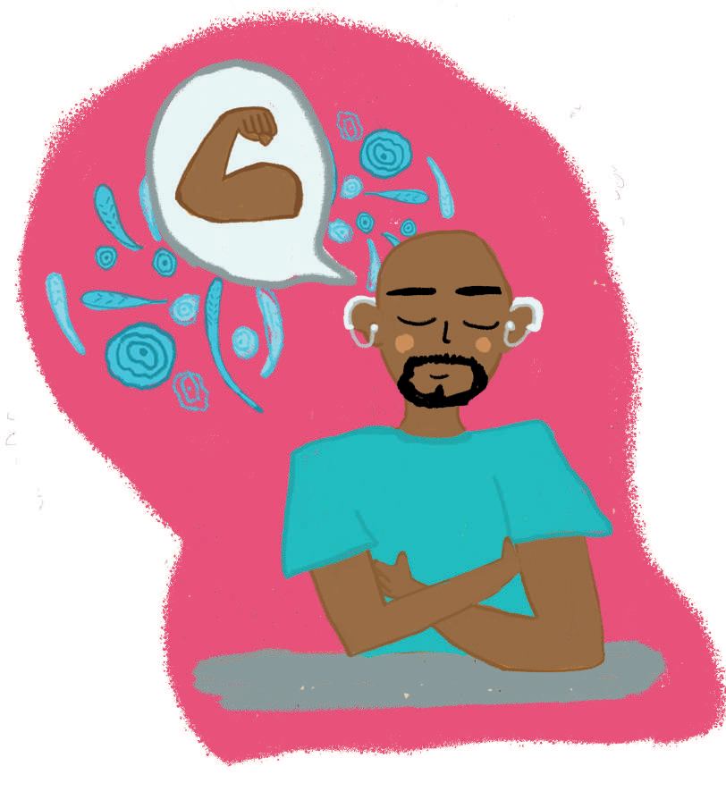

Cuidar los pensamientos

Es importante que se identifiquen aquellas ideas que se tienen sobre el mundo y sobre sí mismos/as, se espera que estas ideas puedan ser lo más realistas y favorables posibles.
En algunas ocasiones estos pensamientos (si no se gestionan de forma saludable) pueden generar un impacto en el desarrollo de la persona en su vida.
Algunas acciones que se pueden realizar para identificar y expresar estas ideas son:
- Escribir pensamientos: escribir favorece la expresión y la liberación de tensiones relacionadas.
- Incluir en los pensamientos afirmaciones positivas y/o realistas: ayuda a redirigir tus pensamientos y a tener una visión más certera de la realidad.
- Reconocer pensamientos recurrentes o constantes: ayudará a que tengas una mayor valoración sobre cómo te identificas a ti mismo y la veracidad de estos pensamientos o si están sesgados por otras personas.
- Expresar tus pensamientos en un espacio seguro: como por ejemplo con un profesional de salud o con personas de confianza.